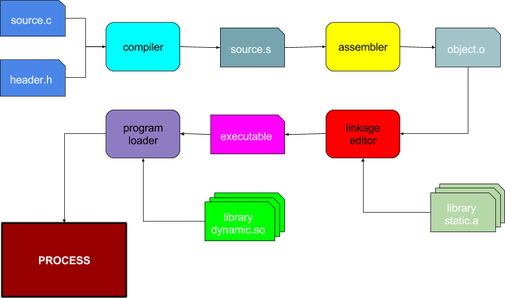
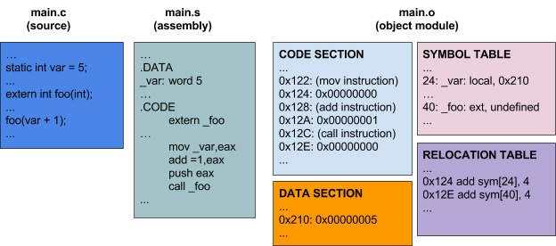
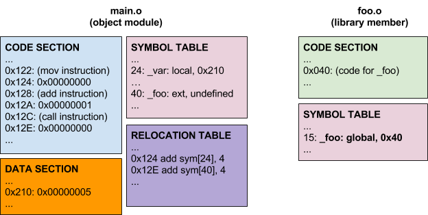
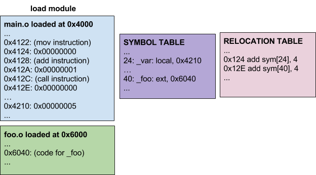
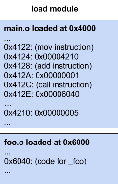
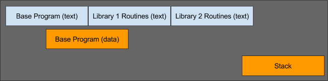
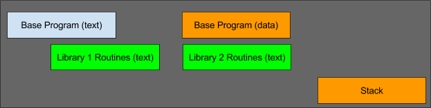
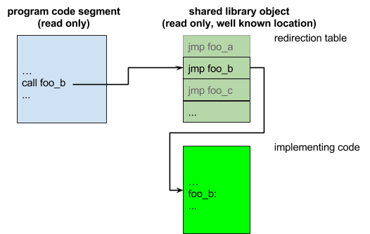

Object Modules, Linkage Editing, Libraries
Introduction
One of the most fundamental abstract resources implemented by an operating system is the process. A process is often defined as an executing instance of a program. If we want to understand what a process is, it is very helpful to understand what a program is. We most often think of a program as one or more files (e.g. C, Java, Python). These are not executable programs, but rather source files that can be translated into machine language and combined with other machine language modules to create executable programs.
From the operating system’s perspective, a program is a file full of ones and zeros, that when loaded into memory, become machine-language instructions that can be executed by the computer on which we are running.
- How do our source modules come to be translated into machine language instructions?
- How do they come to be combined with other machine language modules to form complete programs?
- What is the format of a file that contains an executable program, and how does it come to be correctly loaded into memory?
These are a few of the questions we will discuss in this chapter.
The Software Generation Tool Chain
If we limit our discussion to compiled (vs interpreted) languages, we can typically divide the files that represent programs into a few general classes:
- source modules
- editable text in some language (e.g. C, assembler, Java) that can be translated into machine language by a compiler or assembler.
- relocatable object modules
- sets of compiled or assembled instructions created from individual source modules, but which are not yet complete programs.
- libraries
- collections of object modules, from which we can fetch functions that are required by (and not contained in) the original source/object modules.
- load modules
- complete programs (usually created by combining numerous object modules) that are ready to be loaded into memory (by the operating system) and executed (by the CPU).

Fig 1. Components of the Software Generation Tool Chain
This figure shows a typical software generation tool chain, with the rounded boxes representing software tools that are run and the rectangles with one corner cut off representing files used (and sometimes created) during the process. The large rectangle in the lower left is the final result, a process that the operating system can schedule and run.
Let’s consider the components of this software tool chain in the order they are used.
- Compiler
-
Reads source modules and included header files, parses the input language (e.g. C or Java), and infers the intended computations, for which it will generate lower level code. More often than not, that code will be produced in assembly language code rather than machine language. This provides greater flexibility for further processing (e.g. optimization), may make the compiler more portable, and simplifies the compiler by pushing some of the work out to a subsequent phase. There are, however, languages (e.g. Java, Python) whose compilers directly produce a pseudo-machine language that will be executed by a virtual machine or interpreter.
- Assembler
-
Assembly language is much lower level, with each line of code often translating directly to a single machine language instruction or data item. But the assembly language still allows the declaration of variables, the use of macros, and references to externally defined code and data. Developers occasionally write routines directly in assembly language (e.g. when they need specific code that the compiler is incapable of generating).
In user-mode code, modules written in assembler often include:
- performance critical string and data structure manipulations
- routines to implement calls into the operating system
In the operating system, modules written in assembler often include:
- CPU initialization
- first level trap/interrupt handlers
- synchronization operations
The output of the assembler is an object module containing mostly machine language code. But, because the output corresponds only to a single input module for the linkage editor:
- some functions (or data items) may not yet be present, and so their addresses will not yet be filled in.
- even locally defined symbols may not have yet been assigned hard in-memory addresses, and so may be expressed as offsets relative to some TBD starting point.
- Linkage editor
-
The linkage editor reads a specified set of object modules, placing them consecutively into a virtual address space, and noting where (in that virtual address space) each was placed. It also notes unresolved external references (to symbols referenced by, but not defined by the loaded object modules). It then searches a specified set of libraries to find object modules that can satisfy those references, and places them in the evolving virtual address space as well. After locating and placing all of the required (specified and implied) object modules, it finds every reference to a relocatable or external symbol and updates it to reflect the address where the desired code/data was actually placed.
The resulting bits represent a program that is ready to be loaded into memory and executed, and they are written out into a new file, called an executable load module.
- Program loader
-
The program loader is usually part of the operating system. It examines the information in a load module, creates an appropriate virtual address space, and reads the instructions and initialized data values from the load module into that virtual address space. If the load module includes references to additional (shared) libraries, the program loader finds them and maps them into appropriate places in the virtual address space as well.
Once the virtual address space has been created and the required code has been copied into (virtual) memory, the program can be executed by the CPU.
Object Modules
A program must be complete before it is ready to be loaded into memory and be executed; all of the code to be executed must be included in the program. But when we write software, we do not put all of the code that will be executed into a single file:
- A single file containing everything would be huge, difficult to understand, and cumbersome to update. Code is more understandable and maintainable if it different types of functionality are broken out into (relatively) independent modules.
- Many functions (e.g. string manipulation, formatted output, mathematical functions, image decoding) are commonly used. Making these modules available for reuse (from externally supplied libraries) greatly reduces the work associated with writing new programs.
Most programs are created by combining multiple modules together. These program fragments are called relocatable object modules, and differ from executable (load) modules in at least two interesting respects:
- They may be incomplete, in that they make references to code or data items that must be supplied from other modules.
- Because they have not yet been combined together into a program, it has not yet been determined where (at which addresses) they will be loaded into memory, and so even references to code or data items within the same module can have only relative (to the start of the module) addresses.
Obviously the code (machine language instructions) within an object module are Instruction Set Architecture (ISA) specific; The pattern of ones and zeroes that represents an add instruction for an Intel Pentium is quite different than those that represent the same operation on an ARM or PowerPC. But it might surprise you to learn that many contemporary object module formats are common across many Instruction Set Architectures. One very popular format (for Unix and Linux systems) is called ELF (Executable and Linkable Format). The ELF format is described in
elf(5),
but an ELF module is divided into multiple consecutive sections:
- A header section, that describes the types, sizes, and locations of the other sections.
- Code and Data sections, each containing bytes (of code or data) that are to be loaded (contiguously) into memory.
- A symbol table that lists external symbols defined or needed by this module.
- A collection of relocation entries, each of which describes:
- the location of a field (in a code or data section) that requires relocation
- the width/type of the field to be relocated (e.g. 32 or 64 bit address)
- the symbol table entry, whose address should be used to perform that relocation

Fig 2. A Program in Various Stages of Preparation for Execution
Libraries
In addition to its own modules, an interesting program could easily use hundreds, or even thousands of standard/reusable functions. Specifying which of thousands of available functions are to be included would be extremely cumbersome. This problem is dealt with by creating libraries of useful functions. A library is simply a collection of (usually related) object modules. One library might contain standard system calls, while another might contain commonly used mathematical functions. Reusable code is often distributed in and obtained from libraries. But not all libraries are public collections of reusable code. If my program were made up of hundreds of modules, I might choose to organize my own code into one or more libraries. Different operating systems (and some languages) may implement libraries in different ways (e.g. Java packages), but the concept of packaging groups of related modules together is common to most software development tool chains.
The Linux command for creating, updating, and examining libraries is
ar(1).
Building a program usually starts by combining a group of enumerated object modules (that constitute the core of the program to be built). The resulting aggregation will almost surely contain unresolved external references (e.g. calls to routines that are to be supplied from libraries). The next step is to search a list of enumerated libraries to find modules that contain the required functions (can satisfy the unresolved external references).
Libraries are not always orthogonal and independent:
- It is common to implement higher level libraries (e.g. image file decoding) using functionality from lower level libraries (e.g. mathematical functions and file I/O).
- It is not uncommon to use alternative implementations for some library functionality (e.g. a diagnostic memory allocator) or to intercept calls to standard functions to collect usage data.
This means that the order in which libraries are searched may be very important. If we call a function from library A, and library A calls functions from library B, we may need to search library A before searching library B. If we want to override the standard malloc(3) with valgrind’s more powerful diagnostic version, we need to search the valgrind library before we search the standard C library.
Linkage Editing
At least three things need to be done to turn a collection of relocatable object modules into a runnable program:
- Resolution: search the specified libraries to find object modules that can satisfy all unresolved external references.
- Loading: lay the text and data segments from all of those object modules down in a single virtual address space, and note where (in that virtual address space) each symbol was placed.
- Relocation: go through all of the relocation entries in all of the loaded object modules, each reference to correctly reflect the chosen addresses.
These operations are called Linkage Editing, because we are filling in all of the linkages (connections) between the loaded modules. The program that does this is called a linkage editor. The command to perform linkage editing in UNIX/Linux systems is ld(1). Going back to our previous object module example, the linkage editor would search the specified libraries for a module that could satisfy the external _foo reference,

Fig 3. Finding External References in a Library
Finding such a module, the linkage editor would add it to the virtual address space it was accumulating:

Fig 4. Updating a Process’ Virtual Address Space
Then, with all unresolved external references satisfied, and all relocatable addresses fixed, the linkage editor would go back and perform all of the relocations called out in the object modules.

Fig 5. Performing a Relocation in an Load Module
At this point, all relocatable addresses have been adjusted to reflect the locations at which they were loaded, and all unresolved external references have been filled in. The program (load module) is now complete and ready to be executed.
Load Modules
A load module is similar in format to an object module, in that it contains multiple sections (code, data, symbol table); But, unlike an object module, it is (a) complete and (b) requires no relocation. Each section specifies the address (in the process’ virtual address space) at which it should be loaded. When the operating system is instructed to load a new program (with the exec(2) system call), it:
- Consults the load module to determine the required text and data segment sizes and locations.
- Allocates the appropriate segments within the virtual address space.
- Reads the contents of the text and data segments from the load module into memory.
- Creates a stack segment, and initializes the stack pointer to point to it.
At this point, the program is ready to execute, and the operating system transfers control to its entry point (which is also specified in the load module).
You might wonder, if there is no further relocation to be performed, why a load module might still contain a symbol table? Neither loading nor executing the program requires the symbol table. But if the program were to receive an exception (say at address 0x604C), the symbol table would enable us to determine that the error occurred twelve bytes into the _foo routine. Many load modules do not have any symbol tables (to save space, reduce download time, or make it harder for competitors to disassemble their code). Some load modules contain extensive symbol tables, including entry point addresses, data structure descriptions, source code line numbers, and other information to assist intelligent debuggers.
Static vs. Shared Libraries
In the above described linkage editing process, library modules were directly (and permanently) incorporated into the load module.

Fig 6. Virtual Address Space with Statically Linked Libraries
Because of this permanence, this process is referred to as static linking. It has at least two significant disadvantages:
- Many libraries (e.g. libc) are used by almost every program on the system. Thousands of identical copies of the same code increase the required down-load time, disk space (to store them), start-up time (to read them into memory) and memory (while they are executing). It would be much more efficient if we could somehow allow all of the programs that used a popular library to share a single copy.
- Popular libraries change over time with enhancements, optimizations, and bug fixes. Some enhancements may be very important (e.g. enabling applications to work with a new version of the operating system). In most cases, a newer version of a library is probably better than an older version. But with static linking, each program is built with a frozen version of each library, as it was at the time the program was linkage edited. It might be better (for software reliability) if it was possible to automatically load the latest library versions each time a program was started.
These issues are addressed by run-time loadable, shared libraries. There are many possible approaches, but a very simple way to implement shared libraries is to:
- Reserve an address for each shared library. This is possible in 32-bit architectures, and easy in 64-bit architectures.
- Linkage edit each shared library into a read-only code segment, loaded at the address reserved for that library.
- Assign a number (0-n) to each routine, and put a redirection table at the beginning of that shared segment, containing the addresses (to be filled in by the linkage editor) of each routine in the shared library.
- Create a stub library, that defines symbols for every entry point in the shared library, but implements each as a branch through the appropriate entry in the redirection table. The stub library also includes symbol table information that informs the operating system what shared library segment this program requires.
- Linkage edit the client program with the stub library.
- When the operating system loads the program into memory, it will notice that the program requires shared libraries, and will open the associated (sharable, read-only) code segments and map them into the new program’s address space at the appropriate location. This process is described in ld.so(8).

Fig 7. Virtual Address Space with Shared Libraries

Fig 8. Linking Shared Libraries
In this way:
- A single copy of a shared library implementation (the shared segment) can be shared among all of the programs that use that library.
- The version of the shared segment that gets mapped into the process address space is chosen, not during linkage editing, but rather at program load time. The choice of which version to use may be controlled by a library path environment variable.
- Because all calls between the client program and the shared library are vectored through a table, client programs are not affected by changes in the sizes of library routines or the addition of new modules to the library.
- With correct coding of the stub modules, it is possible for one shared library to make calls into another.
But there are a few important limitations to such an implementation:
- The shared segment contains only read-only code. Routines to be used in this fashion cannot have any static data. Short lived data can be allocated on the stack, but persistent data must be maintained by the client.
- The shared segment will not be linkage edited against the client program, and so cannot make any static calls or reference global variables to/in the client program.
Routines to be included in shared libraries must be designed with these limitations in mind. It may not be possible to put arbitrary subroutines into a shared library.
Dynamically Loaded Libraries
Shared Libraries are very powerful and convenient, but they too have proved to be too limiting for many applications:
- There may be very large/expensive libraries that are seldom used; Loading/mapping such libraries into the process’ address space at program load time unnecessarily slows down program start-up and increases the memory footprint. In some cases, it might be preferable to delay the loading of a module until it is actually needed.
- While loading is delayed until program load time, he name of the library to be loaded must be known at linkage editing time. There are situations (e.g. MIME data types or browser plug-ins) where extensions will be designed and delivered independently from the client that exploits them.
These lead us to Dynamically Loadable Libraries (DLLs): libraries that are not loaded (or perhaps even chosen) until they are actually needed. Again, there are many implementations, but the general model is:
- The application chooses a library to be loaded (perhaps based on some run-time information like the MIME type in a message).
- The application asks the operating system to load that library into its address space.
- The operating system returns addresses of a few standard entry points (e.g. initialization and shut-down).
- The application calls the supplied initialization entry point, and the application and DLL bind to each other (e.g. by creating session data structures, exchanging vectors of service entry points).
- The application requests services from the DLL by making calls through the dynamically established vector of service entry points. When the application has no further need of the DLL, it calls the shut-down method and asks the operating system to un-load this module.
The Linux support for user mode Dynamically Loadable Libraries is described in dlopen(3). This sort of mechanism is used in user mode (e.g. to support different MIME times) as well as inside the operating system (to dynamically load device drivers or file system implementations). In either case it makes it possible for pre-compiled applications to exploit plug-ins to support functionality that was not implemented (or even envisioned) at the time the original application was built. This is very powerful.
Calls from the client application into a shared or Dynamically Loaded library are generally handled through a table or vector of entry points, much like object method invocation. There is much more diversity in the handling of calls from a library back into the application:
- An application can register a call-back routine by passing its address to an appropriate library registration method.
- The same approach can be generalized to a large number of functions by having the application call the library to register a vector of entry points to perform standard functions.
- Dynamically loaded kernel modules (e.g. device drivers and file systems) are allowed to access a myriad of functions and data structures within the kernel into which they have been loaded. This is often enabled by a run-time-loader that effectively linkage edits the newly loaded module against the operating system, filling in the addresses of all unresolved external references from the dynamically loaded module into the operating system. The Linux kernel run-time loader is described in ld.so(8).
Implicitly Loaded Dynamically Loadable Libraries
It should be noted that there are Dynamically Loadable Library implementations that are more similar to shared libraries:
- Applications are linkage edited against a set of stubs, which create Program Linkage Table (PLT) entries in the client load module.
- The PLT entries are initialized to point to calls to a Run-Time Loader.
- The first time one of these entry points is called, the stub calls the Run-Time Loader to open and load the appropriate Dynamically Loadable Library.
- After the required library has been loaded, the PLT entry is changed to point to the appropriate routine in the newly loaded library. From then on, all calls through that PLT entry go directly to the now-loaded routine.
Such implicitly loaded DLLs are (from the client perspective) almost indistinguishable from statically loaded libraries or shared libraries. From this perspective, both Dynamically Loadable and shared libraries can reduce the size of load modules (vs. statically linked libraries) and allow a single on-disk/in-memory code segment to be shared by multiple concurrently running programs.
The greater functionality and performance benefits of Dynamically Loadable Libraries are only available when the client applications become aware of them:
- Shared libraries allow delayed (program load time) binding to some version of a library that was chosen at linkage-edit time. Dynamically Loadable Libraries allow the library to be loaded to be chosen at run time.
- Shared libraries consume memory for the entire time that the process is running. Dynamically Loadable Libraries can be unloaded when they are no longer needed.
- Shared libraries impose numerous constraints and simple interfaces on the code they contain. Dynamically Loadable Libraries are capable of performing complex initialization and supporting complex (bi-directional) calls between the client application and library.
- Shared libraries are (from the client applications perspective) indistinguishable from statically loaded libraries, and very simple to use. Dynamically Loadable Libraries may require considerably more work (from the client application) to load the library, register the interfaces, and establish work sessions.
Shared Libraries are a more efficient mechanism for binding libraries to client applications. Dynamically Loadable Libraries are a mechanism to dynamically extend the functionality of a client application based on resources and information that may not be available until the moment they are needed.